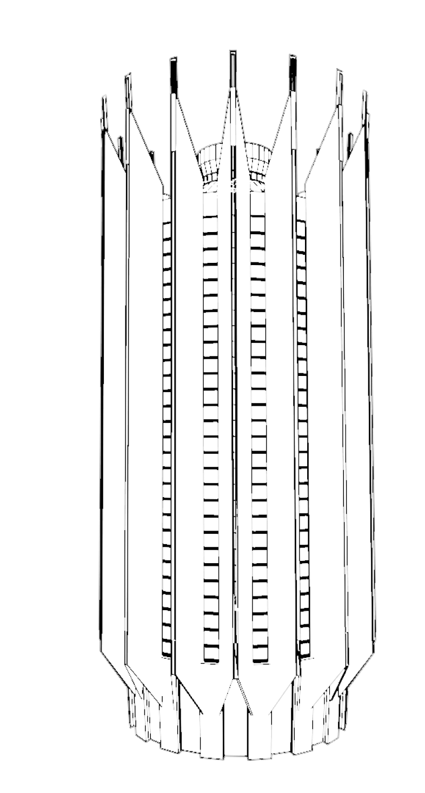

77

На момент строительства здания Ленинград активно прирастал новыми спальными районами,
и футуристический небоскреб мог стать местной достопримечательностью в окружении монотонных "панелек"
Калининского района. Проект здания был разработан в 1973 году в стиле "советского модернизма",
господствовавшего в 1960-80-х годах. Комплекс зданий
в плане имеет форму креста, немного искривленного
в западной части. Доминантой является 77-метровая башня
в виде "бетонного тюльпана", расположенная
на возвышенности в южной части и обращенная к двум проспектам. Вместе с антенной, достроенной в 1990-х
годах, высота здания составляет почти 105 метров. Острые «рёбра» контрольно-испытательной станции
придают ей космический вид и одновременно создают образ готического собора с нервюрами и острыми
шпилями. Индивидуальные панели сложной формы для башни были специально изготовлены в Ленинграде из
керамзитобетона по особому разрешению Госстроя. Внутри башня полая
и представляет металлический каркас с навешенными
на него панелями.